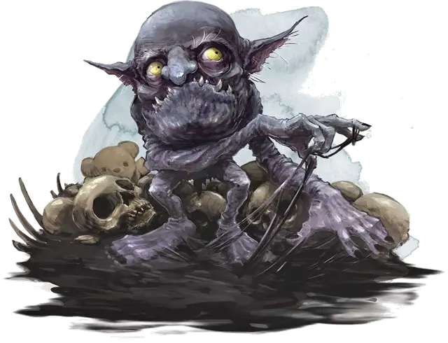

Боггл
Boggle
Маленькая Фея, хаотично-нейтральная

Класс Доспеха 14
Хиты 18 (4к6 + 4)
Скорость 30 футов, лазая 30 футов
| мод | спас | ||
|---|---|---|---|
| СИЛ | 8 | −1 | −1 |
| ЛОВ | 18 | +4 | +4 |
| ТЕЛ | 13 | +1 | +1 |
| мод | спас | ||
|---|---|---|---|
| ИНТ | 6 | −2 | −2 |
| МДР | 12 | +1 | +1 |
| ХАР | 7 | −2 | −2 |
Навыки Восприятие +3, Ловкость рук +6, Скрытность +6
Сопротивление урону огонь
Чувства тёмное зрение 60 футов, пассивное Восприятие 13
Языки Сильван
Опасность 1/8 (25 опыта)
Бонус мастерства +2
Среда обитания Город, Лес, Подземье, Холмы
Особенности
Масло Боггла. . Боггл выделяет негорючее масло из своих пор. Боггл выбирает скользкое оно или липкое и может менять консистенцию масла на своей коже с одной на другую бонусным действием.
• Скользкое масло. Покрывшись скользким маслом боггл получает преимущество на проверки Ловкости (Акробатика) при попытке выбраться из пут, протиснуться в узкое место и освободиться от захвата.
• Липкое масло. Покрывшись липким маслом боггл получает преимущество на проверки Силы (Атлетика), сделанные при захвате и любой проверке способности, сделанной для удержания другого существа, объекта или поверхности. Боггл так же может карабкаться по сложным поверхностям, включая передвижение вниз головой по потолку, без проверок способностей.
Пространственный разлом. . Бонусным действием боггл может создать невидимый и не движущийся проход в отверстии или рамке, которую может видеть в 5 футах от себя, если это пространство не более 10 футов по любой стороне. Пространственный разлом связывает это место и любое другое не далее 30 футов от боггла, которое он может увидеть или может конкретизировать расстояние и направление (например, «30 футов строго вверх»). Находясь рядом с разломом, боггл может видеть сквозь него и считается стоящим рядом с местом назначения, а все что боггл перемещает через разлом (включая части своего тела) появляется в точке назначения. Разломом может пользоваться только боггл, и он существует до конца следующего хода боггла.
Сверхъестественный нюх. . Боггл имеет преимущество на проверки Мудрости (Восприятие), основанные на запахе.
Действия
Тумак. . Рукопашная атака оружием:+1 к попаданию, досягаемость 5 футов, одна цель. Попадание: 2 (1к6 – 1) дробящего урона.
Лужа. . Боггл создает лужу масла, которое или скользкое или липкое (по выбору боггла). Лужа 1 дюйм в глубину и покрывает землю в месте нахождения боггла. Лужа является труднопроходимой местностью для всех существ, кроме богглов, и существует 1 час. Если масло скользкое, то любое существо, входящее в область лужи или начинающее свой ход в ней, должно совершить спасбросок Ловкости Сл 11 или упасть ничком.
Если масло липкое, то любое существо, входящее в область лужи или начинающее свой ход в ней, должно совершить спасбросок Силы Сл 11 или стать опутанным. В свой ход существо может потратить действие и попытаться освободить себя от липкой лужи, закончив этот эффект и передвинувшись в ближайшее незанятое место при успешной проверки Силы Сл 11.
Описание
Богглы – это маленькие буки из сказок. Они проживают на опушках Страны Фей и их можно найти на Материальном Плане, где они прячутся под кроватями и в кладовках, выжидая, чтобы напугать и устрашить народ своим озорством.
Боггл рождается из чувства одиночества, материализующегося в месте, где Страна Фей касается мира поблизости от разумного существа, которое чувствует себя изолированным и брошенным. Например, брошенный ребенок может непреднамеренно призвать боггла и считать его своим воображаемым другом. Боггл может появиться на чердаке дома одинокого вдовца или в пещере отшельника.
Докучливые Негодники. Богглы затевают мелкие розыгрыши для собственного развлечения, проводя время досаждая своим хозяевам. Боггл может побить посуду, спрятать инструменты, издавать звуки пугающие коров и портящие молоко или прятать ребенка на чердаке. Хотя проделки богглов могут причинять беспокойство или непреднамеренный вред, обычно их целью является баловство, а не разрушение. Если ему что–то будет угрожать, боггл скорее сбежит, чем начнет драку.
Масляные выделения. Боггл выделяет масло из пор и может сделать его скользким или липким. Масло высыхает и исчезает час спустя.
Искривляющееся Пространство. Боггл может создать магические проходы для перемещения на короткие расстояния или для воровства вещей, которые по–другому для него недоступны. Чтобы создать такой проход в пространстве, боггл должен находиться рядом с чем–то, имеющим раму, таким как окно или дверь, пространство между прутьями клетки или пространство между кроватью и полом. Проход невидим и исчезает через несколько секунд – этого достаточно богглу для прохода, воровства или нападения через него.
Ненадежные союзники. Богглы могут стать верными слугами хозяина с сильной волей, а злобные существа, такие как фоморы или карги иногда укрывают богглов в своих логовах. Чернокнижники, которые заключают пакт с архифеей могут так же командовать богглами, а харизматические индивиды, которые делают правильные предложения, заключают временные союзы с этими маленькими шутниками. Скучающий боггл всегда найдет чем себя развлечь.